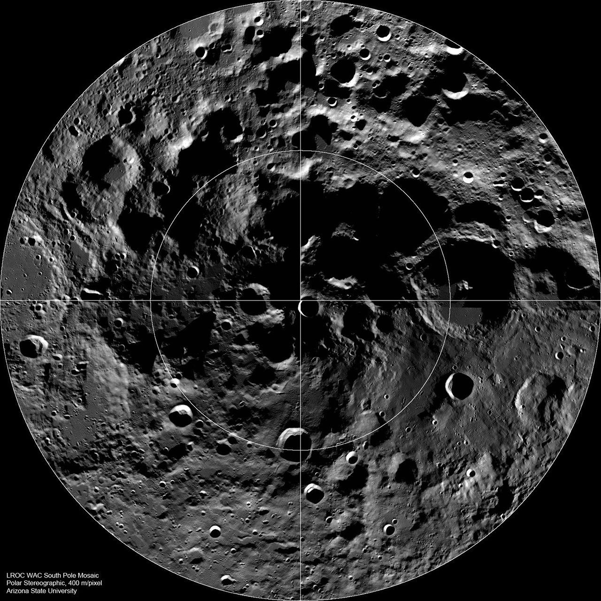
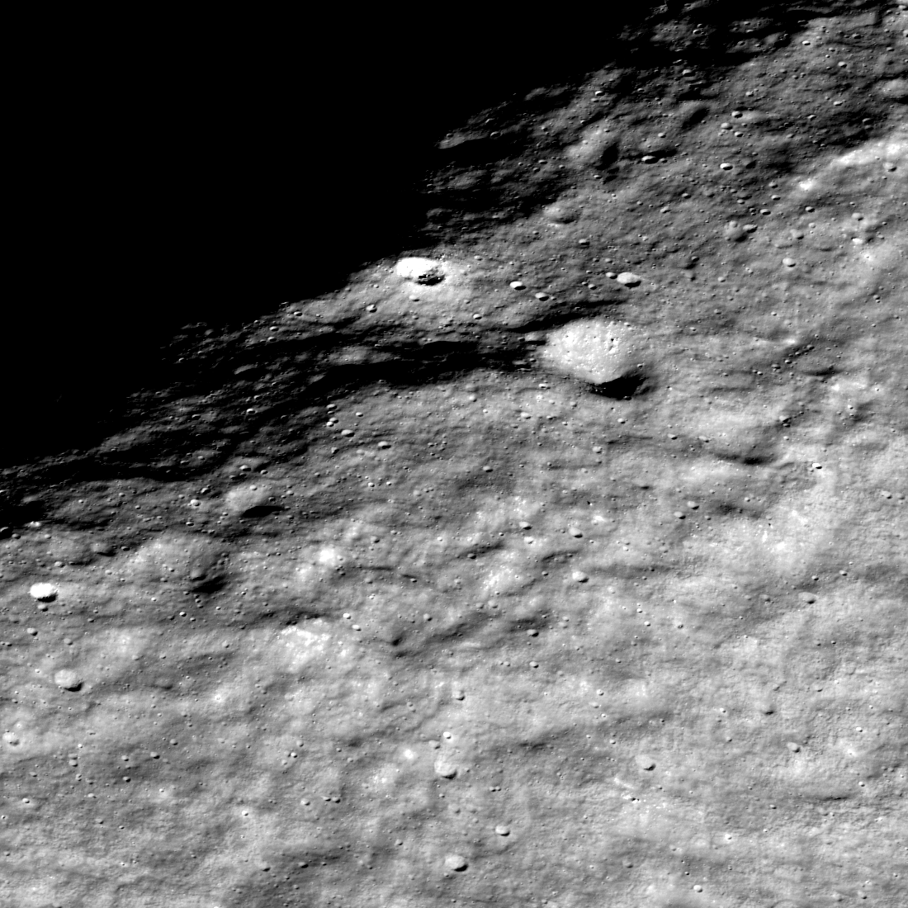
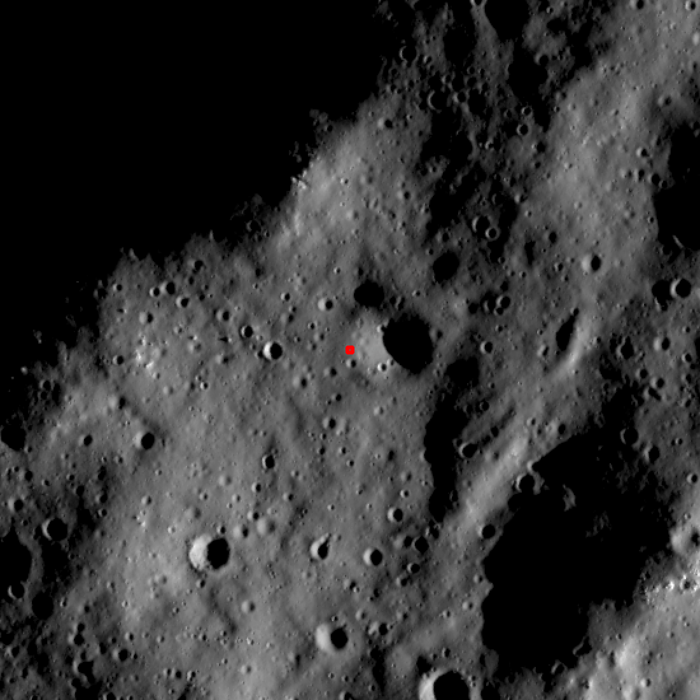

SOUTH POLE / TERRAIN + MISSION CONDITIONS
Find the stronger landing candidate.
Compare slopes, terrain roughness, elevation, sunlight and Earth visibility for your mission date.
ORDERED BY GATES, THEN SCREENING SCORE
Lower risk first. Unknowns stay visible.
Choose your UTC date, then rank the sites.
Relative regional screening, not a safe-touchdown probability. Images and coarse DEMs cannot certify metre-scale boulder clearance, bearing strength or landing stability.
| Rank / score | Site & gate result | Slope P95 | Elevation | Roughness | Steep area | Sun / Earth at landing | Mission Sun / Earth | Source grid |
|---|
A gate-passing site always precedes a gate-failing site. Unassessed means insufficient data, not dangerous.
Show factors, weights and definitions
Slope: 95th percentile of Horn 3×3 slopes in a 1 km-radius area (35 points). Roughness: RMS elevation residual after fitting a plane over that area (20). Steep area: fraction exceeding your slope limit (15). Mission sunlight and full-Earth windows (10 each), visible Sun fraction and full-Earth clearance at landing (5 each). Scores run 0–100; they are not probabilities.
Each terrain penalty saturates at twice its limit. Gates are evaluated separately and take priority over score. Elevation is height above a 1,737.4 km lunar reference sphere, with an optional allowed corridor and no automatic higher-is-better bonus. The Sun/Earth windows use hourly SPICE samples and the planner's 120 km terrain horizon. Short events and sub-grid hazards can be missed.
Terrain metrics always use the adjusted LOLA stack. Different native grid spacings can hide different hazards; coarser coverage is explicitly identified. Areas with fewer than four source cells per radius are unassessed. Actual lander footprint hazards need higher-resolution registered imagery/DTMs and vehicle limits.
80°S TO THE GEOGRAPHIC POLE
South-pole regional survey
Click the map to inspect a survey node.
Open this coordinate in the planner ↗All nodes receive coarse terrain and landing-time Sun/Earth checks. Twelve shortlisted nodes, at least 20 km apart, receive a full 2 km-patch and mission-window assessment. Their numbered markers refer to the ranked table. Other map nodes have coarse terrain and arrival-time visibility checks only. This is a regional sampling survey, not an exhaustive search for the globally safest landing point.
Shiv Shakti and Apollo 11 are outside the 80°S cap and remain labelled historical comparison sites.
Coarse grid priority · first 20 nodes
All 11,553 nodes have a coarse priority index in the JSON export. It uses sampled slope / 10 + local roughness proxy / 5, plus 4 for obstructed Earth and 2 for obstructed Sun. Lower index comes first. This rapid index differs from the detailed mission safety score and can miss hazards; open any coordinate in the planner to refine it.
| Grid priority | Coordinate | Sampled slope | Elevation | Local roughness proxy | Coarse Sun / Earth |
|---|
REAL OBSERVATIONS / TRACEABLE SOURCES
The south pole, as photographed from orbit.
These are actual LROC observations and image mosaics, not AI images or terrain renders. Their acquisition dates differ from your selected mission date. They are reference imagery, not live lighting predictions or registered hazard maps for every candidate.



Elevation & slope: supplied LRO/LOLA adjusted 80 m polar DEM; 240 m grid for Shiv Shakti; approximately 1.9 km global grid for Apollo 11. Heights, Horn slopes, plane-residual roughness and steep-area fractions are calculated from these rasters, not inferred from image brightness. NASA PDS LOLA archive ↗ · LPI south-pole slope atlas & method ↗
Sun & Earth: existing NAIF/JPL DE440 SPICE ephemeris and lunar orientation kernels, with local terrain horizons. JPL NAIF ↗
The Apollo 11 soil material in the spacecraft view remains illustrative and is not a south-pole photograph. The three images above are available offline in this update; the source links explain their verified coverage and provenance. No NASA endorsement is implied.